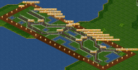
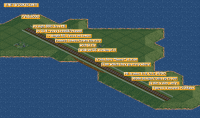
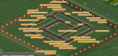
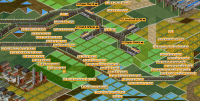
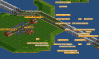
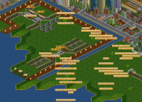
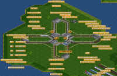
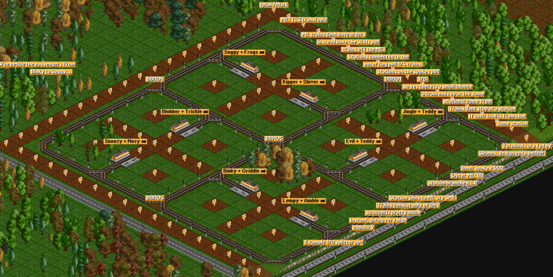
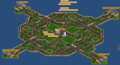

PAX
PAX games are mostly passenger games, but they can be with mail, or only with mail, too. The general idea is to service many towns, which leads to many questions what to connect with what.
Contents
ICE
The first option called ICE means that there are inner city networks which transfer passengers to ICE terminals (stations). Then, there is the Intercity network which interchanges passengers between various ICE stations. ICE is usually based a lot around growing towns and creating local networks for them instead of the ML itself.
City Network / SBahn / Feeders
There are many names how the trains which operate inside cities can be called. The thing they share is how they work - the sole purpose of these networks is to get passengers out of the city to the Intercity station (this is done by transfer and leave empty orders). This comes with goals to provide as good service as possible (high % of transported passengers from the town), generally the aim not to destroy too many buildings is always in place, so making the networks compact is often a key aspect too.
| PSG 187 | Download: Public Server Game 187 Final / Archive entry for this game |
 |
Sometimes a passenger game can be made very interesting by increased focus on the mainline, for example with CL10. |

| PSG 201 | Download: Public Server Game 201 Final / Archive entry for this game |

|
Passenger games can also be made on a gigantic scale, this is especially viable with DB set as the Transrapids have silly capacities. |
| PSG 215 | Download: Public Server Game 215 Final / Archive entry for this game |
 |
One of the most typical passenger game themes is the Japanese newGRF theme used in this game, just like classic pax semi-chaos. |

TGV
Another option is so called TGV, where there are no city networks (or absolutely minimal) and trains go directly between town stations - there can be many stations in each city. TGV games are generally using many groups of trains which go between each two stations, therefore it is necessary to name and group trains properly.
Train Grouping
The usual manner of grouping trains is rather simple - a group is created and given name depending on where trains go, for example [ABC] - [DEF]. The station which tag is first in the alphabet is always first in the group name to prevent duplicate groups like [ABC] - [DEF] and [DEF] - [ABC]. It is optimal to have as low amount of trains in each group as possible so they cannot clog together and create a train wave. This occurs when first trains load 100%, second 80% because there is not as much cargo in the station, and third train loads 0%. Therefore 2nd and 3rd train spent less time in the station and will start to get closer behind the first train - which results in a wave of 3 trains together.
| PSG 101 | Download: Public Server Game 101 Final / Archive entry for this game |
 |
A typical TGV game with a lot of mainline stations and train groups. The city service was sub-optimal, though. |

| PSG 197 | Download: Public Server Game 197 Final / Archive entry for this game |
 |
Mail TGV was used in this game added to a cargo network. Note that every train group has only one train in it. |

| PSG 204 | Download: Public Server Game 204 Final / Archive entry for this game |
 |
This game included a separate passenger TGV network where each group had one train. |

Multi-directional Transfer
One of the more special options is to divide the map into a few parts, transfering all passengers through a set of central transfer stations. That means every town gets the possibility of having full load orders which greatly reduces any train waves. The biggest problem with this solution is that you need to maintain some balance between various transfer sectors so that optimally there is equal inflow of passengers from each end of the central transfer station.
| PSG 192 | Download: Public Server Game 192 Final / Archive entry for this game |
 |
The first instance of using bi-directional transfer, ending as a great success. You can see that one of the bigger problems was central station spread. |

| PSG 235 | Download: Public Server Game 235 Final / Archive entry for this game |
 |
Second time we used this kind of a network was with four sectors which is a slight overcombination as it gets very hard to balance the traffic between them, especially on a bigger map as cpu performance issues hit soon. |

Self-Regulation in passenger games
The fact that any pickup also accepts cargo from any other pickup creates very interesting conditions for SRNW, which can be used in various ways.
| PSG 157 | Download: Public Server Game 157 Final / Archive entry for this game |
 |
So called stochastic network by the time it was built, this game is based on equal spread of ML traffic between the ICE stations. |

| PSG 207 | Download: Public Server Game 207 Final / Archive entry for this game |
 |
In this game trains split fron the SML ring into the ICE stations on demand which was mostly regulated by signal gaps. The SML structure also made sure that trains would travel at least some distance before exiting the ML ring after joining it. The SML is also a great addition to a passenger game as it lets us focus only on the city networks because the ML works automatically. |